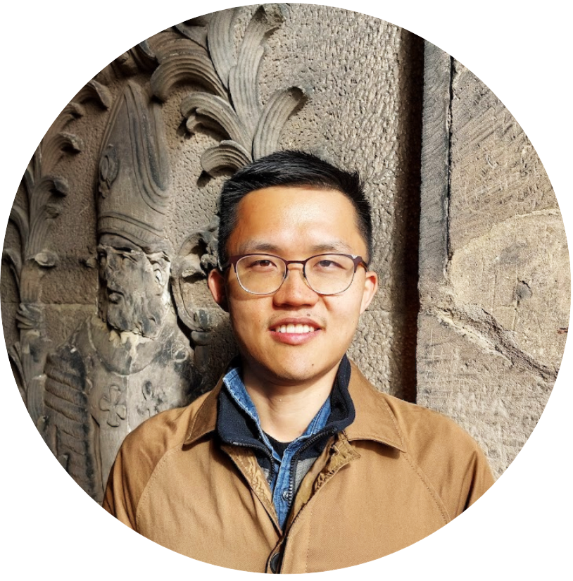

I am an Assistant Professor, Teaching Stream of Linguistics in the Department of Language Studies at the University of Toronto (Mississauga). My research interests are semantics, pragmatics and language change. I work closely with Sino-Tibetan languages of the Himālayas & East Asia, particularly in urban fieldwork settings.
I received my Ph.D. in Linguistics (with a Cognitive Science minor) from Cornell University in 2023. Since 2014, I have been a contributing researcher at the Endangered Language Alliance.